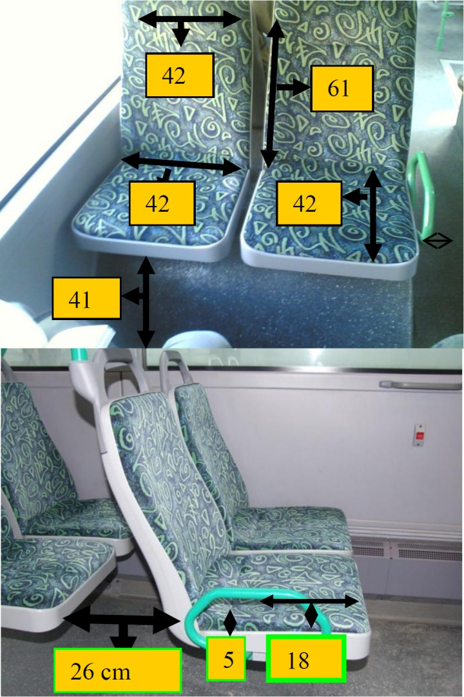

|
Ali Ýþeri, Nurullah Arslan
Fatih Üniversitesi, Endüstri Mühendisliði Bölümü
13. Ulusal Ergonomi Kongresi, 6-7-8 Aralýk 2007, Kayseri
Özet:
Bu çalýþmada Ýstanbul'un toplu ulaþýmýný saðlayan belediye otobüslerinin (ÝETT) ergonomik deðerlendirmesi yapýlmýþtýr. Deðerlendirmede ÝETT'nin kullanýldýðý modellerden biri ve en yenisi olan Citaro markalý otobüsler dikkate alýnmýþtýr. Deðerlendirme oturarak ve ayakta yolculuk yapanlar için ayrý ayrý yapýlmýþ olup bu deðerlendirme sonucunda Citaro model otobüslerdeki temel ergonomi hatalarý ortaya çýkartýlmýþtýr. Çalýþma sýrasýnda ÝETT otobüslerini kullanan insanlarýn ne kadar sýklýkta bu otobüsleri kullandýklarý, ortalama yolculuk süresi gibi veriler hazýrlanan bir anketle elde edilmiþ ve dikkate alýnmýþtýr. Daha sonra bu problemlere çeþitli çözüm önerileri sunulmuþ ve iyileþtirmelerin saðlayacaðý artýlar ortaya konmuþtur. Bunlarý yaparken maliyet-fayda analizleri gözardý edilmemiþtir.
Anahtar Sözcükler: Ergonomi, ÝETT, Toplu Ulaþým, Koltuk Dizayný.
1. Giriþ
Toplu ulaþým sistemleri Sanayi Devrimi'nden beri sürekli önemini arttýrmaktadýr. Otobüs ile toplu taþýmacýlýk ise özellikle geliþmekte olan ülkelerde en sýk kullanýlan ulaþým alternatifidir. Bu nedenle bu konu üzerine birçok araþtýrma yapýlmýþtýr. Bu çalýþmalar otobüs kullanýmýnýn farklý alanlarýnda yapýlmýþtýr. Örneðin; Badami ve Haider (2007) finansal analizler yaparak Hindistan'danýn dört büyük metropolündeki otobüslerin halka nasýl daha uygun fiyatla hizmet verebileceklerini araþtýrmýþlardýr. Hensher (2007) ise hýzla artan otomobil kullanýmýna karþýn otobüslerin bir alternatif olabilmesi için BRT (Bus Rapid Transit) sistemini incelemiþtir. Karlström (2005) ise çeþitli yakýtlarý kullanan otobüs çeþitlerinin çevre üzerine etkisini incelemiþtir.
Otobüslerde ergonomi üzerine de birçok çalýþma yapýlmýþtýr. Örneðin; Kogi (1980) toplu taþýma araçlarýndaki yolcu gereksinimlerini ergonomi çerçevesinde belirtmiþtir. Oxford (1974) ise toplu taþýma araçlarýnýn koltuk dizaynýnda nelere dikkat edilmesi gerektiðini bildirmiþtir. Schaller ve diðerleri (1998) New York þehrindeki otobüsleri ergonomi ve güvenlik bakýmýndan incelemiþ, Zannin ve diðerleri (2003) Brezilya'nýn Curitiba þehrindeki otobüs sürücülerinin maruz kaldýklarý gürültü üzerine araþtýrma yapmýþtýr.
Bu çalýþmadaki amaç ise önceki çalýþmalar ýþýðýnda ÝETT'nin kullandýðý modellerden biri ve en yenisi olan Citaro markalý otobüslerde oturarak ve ayakta yolculuk yapanlar için ayrý ayrý ergonomik deðerlendirme yapmaktýr. Ýstanbul 10 milyonu aþkýn nüfusu ile dünyanýn en kalabalýk metropollerinden biridir ve ÝETT de 2006 yýlýnda yaklaþýk 477 milyonluk yolculuk sayýsýyla Ýstanbul'un en önemli toplu ulaþým kurumudur. Bu nedenle ÝETT'nin hala almakta olduklarý Citaro otobüslerinin ergonomik analizinin yapýlmasý önemlidir.
2. Koltuklarýn Analizi
Uzun vadede tüm koltuklar rahatsýzlýk verirler, fakat bazý koltuklar diðerlerine nazaran daha çabuk rahatsýzlýk vermeye baþlarlar. Bir koltuðun rahatlýðý koltuk özellikleri, kullanýcý özellikleri ve yapýlan iþ özelliklerinin etkileþiminden oluþur. Koltuk ölçüleri, açýlarý, profili, stabilitesi, desteði ve döþemesi kullanýcýnýn vücut duruþunu ve gövde, omuzlar, baþ ve vücudun alt kýsýmlarýný destekleyen mekanizmalarý etkiler. Eðer vucut gerekli þekilde desteklenmezse, vucut duruþu sadece kaslar sayesinde saðlanýr; eðer koltuk profili kullanýcýnýn vücut yapýsýna ve ölçülerine uymuyorsa, bu da asýl amacý yük taþýma olmayan vücudun yumuþak dokularý üzerinde baský oluþturur. Bu gibi durumlarda oluþan statik kas eforu ve yumuþak doku üzerindeki yerel basýnç artýþlarý kýsa zamanda fizyolojik olarak kas yorgunluðuna ve kan akýþýnda azalmalara, hatta ödemlere sebep olur (Pheasant ve Haslegrave, 2006).
Oturma zamaný da konfor açýsýndan çok önemlidir. Çünkü fizyolojik etkiler zamanla birlikte artar, böylece konfor da azalýr. Yapýlan ankette kullanýcýlarýn günde ortalama bir saat yolculuk yaptýklarý ortaya çýkmýþtýr. Bu süre gidiþ geliþ olarak alýndýðýnda kýsa gibi görünmektedir. Fakat bazý yolcularýn üç saate çýkan sürelerde yolculuk yaptýklarý ve Ýstanbul trafiðinin belli zamanlarda kilitlenmesi sebebiyle bu zamanýn çok daha uzayabildiði bilinmektedir. Bu nedenle koltuk dizaynýnýn vücut duruþunu desteklemesi, kaslar üzerine düþen statik eforu ve yumuþak dokular üzerine yapýlan lokal basýnçlarý engellemesi gerekir.
2.1 Yükseklik
Koltuk yüksekliði popliteal yüksekliðinden (Þekil 2'deki 16 no'lu ölçü) fazla olduðu durumlarda uyluðun alt kýsmýnda basýnç oluþur. Bu da alt üyelere giden kan akýþýný azaltýr ve uyuþmalarla birlikte ayaklarda þiþme olur. Yükseklik azaldýkça ise; yolcu, gövdesi ve uyluklarý arasýndaki açýyý korumak için omurgasýný öne doðru eðmek zorunda kalýr. Ayrýca daha büyük bir bacak alanýna ihtiyaç duyulur. Bu yüzden optimum koltuk yüksekliði popliteal yüksekliðidir. Bu yüzden 5. yüzdelik bayan popliteal ölçüsü olan 35 cm'e 3-5 cm'lik bir ayakkabý payý verip koltuk yüksekliðini 38-40 cm olarak ayarlamalýyýz (Pheasant ve Haslegrave, 2006). Citaro otobüslerinde bu ölçü Þekil 1'de de görüldüðü gibi 41 cm olarak uygulanmýþtýr. Bu bakýmdan bir sorun yoktur.
Uyluklarda oluþabilecek basýnçlarý engellemek için koltuk uçlarýnýn yuvarlatýlmasýna dikkat edilmemiþtir. Koltuk çok yüksek olmamasýna raðmen uzun süreli yolculuklarda oluþan basýnç rahatsýzlýk oluþturmaktadýr.
2.2. Derinlik
Koltuk eðer 5. yüzdelik bayan kalça - popliteal uzunluðundan (Þekil 2'deki 14 no'lu ölçü) yani yaklaþýk 43 cm'den derin olursa, yolcu dizlerinin arkasýnda bir basýnç oluþmadan sýrt desteðine dayanamayacaktýr. O yüzden koltuk derinliði arttýkça sorunlar artacaktýr. Bu yüzden koltuk derinliði 30-43 cm arasýnda olmalýdýr. Citaronun koltuk derinliði Þekil 1'de de görüldüðü gibi 42 cm ile bu kritere uymaktadýr.
2.3. Geniþlik
Ýki kiþinin yan yana oturduðu koltuklarda iki adet 95. yüzdelik erkek bideltoid sýrt geniþliðini (Þekil 2'deki 17 no'lu ölçü) kullanmak gerekmez. Çünkü 95. yüzdelik iki erkeðin yanyana oturmasý olasýlýðý 400'de birdir. Bu tür koltuklarda Pheasant & Haslegrave (2006) tarafýndan olasýlýk teorisi kullanýlarak yapýlan çalýþmadaki 103 cm'lik deðer kullanýlmalýdýr. Ancak
Citaro koltuklarýnýn geniþliði 90 cm'dir. Bu bakýmdan iki kiþinin yanyana rahat yolculuk yapmasý için pek uygun deðildir. Ancak otobüsün toplam geniþliði 2,5 m. olduðundan ve 50 cm'lik koridor býrakýlmasý gerektiðinden bu ölçünün artýrýlmasý mümkün gözükmemektedir.

Þekil 1. Citaro Otobüs Koltuklarýnýn Bazý Ölçüleri
|